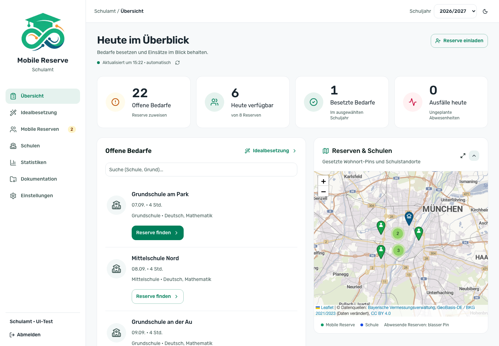
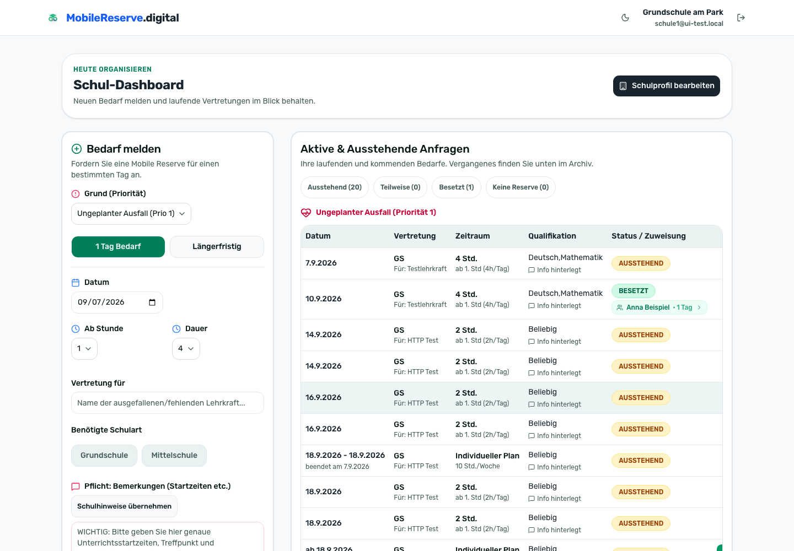
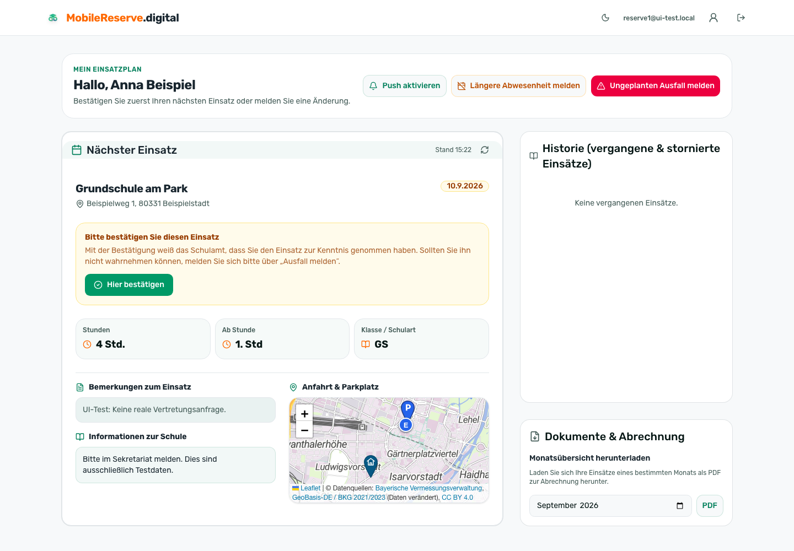
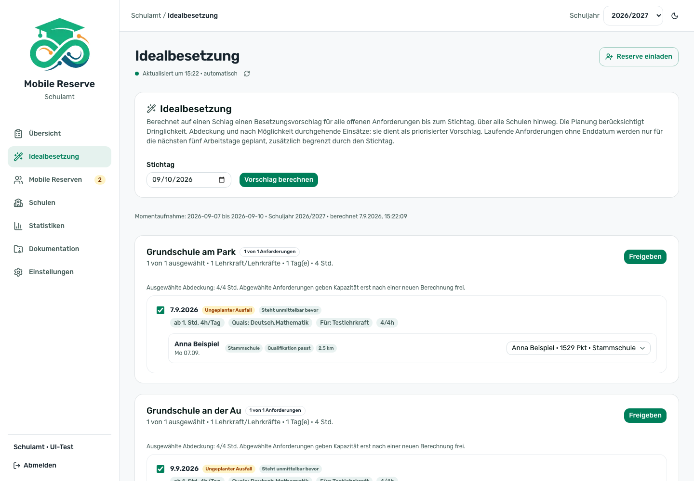
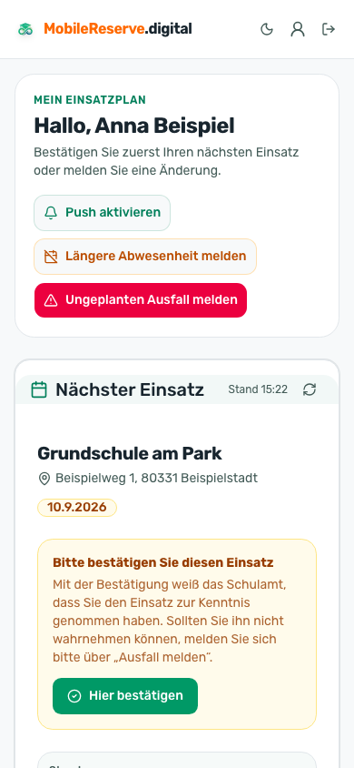

Für staatliche Schulämter
Weniger Abstimmung.
Mehr Überblick.
Mobile Reserven gemeinsam organisieren: Schulen melden Bedarf, das Schulamt plant und gibt frei, Lehrkräfte bestätigen ihren Einsatz. Von der ersten Anfrage bis zum Nachweis.
Auf Ihrem eigenen Server · Quelloffen (AGPL-3.0) · Ohne Cloud-Zwang

Für den Arbeitsalltag gemacht
Ein gemeinsamer Stand statt vieler einzelner Listen.
Offene Bedarfe erkennen
Anfragen, Verfügbarkeit und Rückmeldungen stehen an einem Ort. Das erleichtert die Abstimmung zwischen Schule, Schulamt und Lehrkraft.
Vorschläge statt Sucharbeit
Einzelne Bedarfe gezielt besetzen oder mehrere Schulen gemeinsam planen. Das System bereitet vor, das Schulamt entscheidet.
Einsätze nachvollziehen
Bestätigungen, Einsatznachweise und Monatsübersichten unterstützen die Dokumentation und die Vorbereitung der Abrechnung.
Drei Rollen, ein System
Jede Seite sieht genau das, was sie braucht
Getrennte Zugänge für Schule, Schulamt und Lehrkraft — mit Zugriffen, die auf die jeweiligen Aufgaben begrenzt sind.

Schule
Meldet Zeitraum, Unterrichtsstunden und Hinweise zum Einsatz. Sieht anschließend, wer kommt und ob der Einsatz bereits bestätigt wurde. Eingang und Parkplatz lassen sich im Schulprofil getrennt markieren.
Schulamt
Behält die Bedarfe der eigenen Schulen im Blick, prüft Besetzungsvorschläge und gibt Einsätze bewusst frei. Karte, Statistiken, Dokumentation und Datensicherung ergänzen die Planung.

Lehrkraft
Sieht den nächsten Einsatz mit Anfahrt, Hinweisen der Schule und Ansprechpartner — und bestätigt ihn mit einem Fingertipp. Ein Ausfall lässt sich direkt melden.
Mehrere Schulen. Ein gemeinsamer Vorschlag.
Idealbesetzung: Die Vorarbeit übernimmt das System.
Planen Sie offene Bedarfe gemeinsam bis zu einem Stichtag. Die Anwendung berücksichtigt Dringlichkeit, Verfügbarkeit und möglichst durchgehende Einsätze. Sie behalten die Entscheidung.
- 01
Zeitraum wählen
Schuljahr und Stichtag festlegen. Geplant wird ab heute; bereits besetzte Stunden werden berücksichtigt.
- 02
Vorschlag prüfen
Besetzungen, offene Lücken und Begründungen ansehen. Anforderungen abwählen oder verfügbare Alternativen prüfen.
- 03
Bewusst freigeben
Pro Schule freigeben. Der Server prüft erneut; Mehrarbeit erfordert eine ausdrückliche Bestätigung.

Knappheit gemeinsam betrachten
Die Schulen werden rundenweise berücksichtigt. Eine begrenzte Tauschprüfung kann zusätzliche einzelne Bedarfstage besetzen, ohne zusätzliche Mehrarbeit zu erzeugen.
Konflikte sichtbar machen
Belegte Tage, Ausfälle und Teilzeit-Stundenpläne werden geprüft. Widersprüchliche Tausche blockieren die Freigabe; veraltete Entwürfe müssen neu berechnet werden.
Grenzen klar benennen
Die Idealbesetzung ist eine regelbasierte Planungshilfe, kein Versprechen vollständiger Versorgung oder eines mathematisch optimalen Ergebnisses.
Auch gezielt für einen einzelnen Bedarf
Einzelzuweisung: passend zur konkreten Situation.
Jede Lehrkraft wird für den konkreten Bedarf bewertet und sortiert. Die Entscheidung bleibt beim Schulamt, die Vorarbeit übernimmt das System.
- 1Stammschule berücksichtigen. Die Vertrautheit mit der Schule fließt als Bonus in die Bewertung ein.
- 2Qualifikation und Schulart. Passende Merkmale verbessern die Bewertung. Sie sind keine absoluten Ausschlussregeln; die fachliche Prüfung bleibt beim Schulamt.
- 3Entfernung. Luftlinie zwischen hinterlegtem Wohnort-Pin und Schulstandort als Orientierung – keine berechnete Fahrzeit.
- 4Wochenstunden. Mehrarbeit senkt die Bewertung deutlich. Maßgeblich ist die Woche des geplanten Einsatzes.
- 5Teilzeit-Stundenplan. Wer dienstags nicht arbeitet, wird dienstags nicht vorgeschlagen.
- 6Konflikte und Ausfälle. Doppelbelegungen werden erkannt und blockiert, gemeldete Ausfälle fallen automatisch heraus.
So läuft ein Vorgang
- Schule meldet Bedarf
Das Schulamt wird per E-Mail informiert. - System schlägt Lehrkräfte vor
Bewertet nach Nähe, Qualifikation und Auslastung. - Schulamt weist zu
Die Beteiligten werden über den eingerichteten Mailversand informiert. Mobile Reserven können zusätzlich Web-Push aktivieren. - Lehrkraft bestätigt
Das Schulamt sieht auf einen Blick, welche Zuweisungen noch offen sind. - Einsatz dokumentieren
Bestätigungsnachweise als PDF für Schulamt und Mobile Reserve – nicht für Stamm- oder Zielschule. Monatsübersichten und Tabellenexporte ergänzen die Dokumentation.

Unterwegs
Auf dem Handy zu Hause
Die Anwendung lässt sich auf dem Startbildschirm ablegen und verhält sich wie eine App — ohne Installation aus einem Store.
- ✓Web-Push nur für Mobile Reserven. Nach Aktivierung und Freigabe auf einem unterstützten Gerät. Die E-Mail-Benachrichtigungen für die jeweiligen Beteiligten bleiben davon unabhängig.
- ✓Karte und Anfahrt. Separate Pins für Eingang und Parkplatz helfen, die richtige Stelle an der Schule zu finden.
- ✓Kalendereintrag per E-Mail — ein Klick, und der Einsatz steht im Kalender.
- ✓Eigener Wohnort-Pin. Lehrkräfte können ihren Standort selbst präzisieren. Die vollständige Anschrift bleibt separat für Post und Dokumentation erhalten.
- ✓Heller und dunkler Modus. Die Ansicht passt sich an große und kleine Bildschirme an.
Vom ersten Start bis zum nächsten Schuljahr
Für Ihr Schulamt einrichten. Im Alltag weiterführen.
Eine Installation für ein Schulamt und dessen Schulen. Die geführte Einrichtung fragt die notwendigen Angaben Schritt für Schritt ab.
Dienststelle und Dokumente
Schulamtsdaten, Briefkopf und Unterschriften vorbereiten. Die Angaben für Bestätigungen gehören zur Einrichtung.
Schulen und Mailversand
Mindestens eine Schule anlegen. Die Mail-Anbindung kann direkt eingerichtet oder später ergänzt werden.
Reserven einladen und übernehmen
Zeitlich begrenzte Einladungslinks lassen sich erneuern. Ausgewählte Mobile Reserven können in das neue Schuljahr übernommen werden.
Datenschutz
Löschfristen, die von allein laufen
Die Anwendung unterstützt feste Löschfristen und protokolliert ihre Durchläufe. Die passende Konfiguration und rechtliche Prüfung liegen bei der betreibenden Dienststelle.
| Frist | Was geschieht | Betrifft |
|---|---|---|
| 30 Tage | Klarnamen werden unkenntlich gemacht | Name der vertretenen Lehrkraft, Bemerkungsfeld |
| 30 Tage | Freitext der Ausfallmeldung wird gelöscht | Begründung einer Krankmeldung |
| 400 Tage | Datensatz wird vollständig entfernt | Einsätze, Anforderungen, Abwesenheiten |
Protokollierbar
Erfolgreiche Durchläufe können mit Zeitstempel und Ergebniszahlen protokolliert werden. Prüfen Sie die Einstellungen vor dem Einsatz.
Planbar
Der Zeitplan wird durch die Anwendung gesteuert; die Dienststelle prüft Betrieb, Überwachung und Aufbewahrungsfristen.
Eine Dienststelle
Eine Installation ist für ein Schulamt und dessen Schulen vorgesehen.
Betrieb in eigener Verantwortung
Die Anwendung wird auf Ihrer eigenen Infrastruktur installiert und betrieben. Datenschutzrechtlich verantwortliche Stelle im Sinne von Art. 4 Nr. 7 DSGVO ist damit die betreibende Dienststelle, nicht der Anbieter der Software. Einsatz und Nutzung erfolgen auf eigene Verantwortung; die Software wird als quelloffenes Werk unter der AGPL-3.0 ohne Gewährleistung bereitgestellt.
Für Einführung und Dokumentation können folgende Unterlagen als Ausgangspunkt angefragt und durch die Dienststelle geprüft werden:
- ✓Technische und organisatorische Maßnahmen (TOM)
- ✓Datenschutz-Folgenabschätzung
- ✓Verfahrensbeschreibung
- ✓Verzeichnis der Verarbeitungstätigkeiten
- ✓Muster für eine Dienstvereinbarung mit dem Personalrat
Betrieb
Läuft auf Ihrem Server
Für den vorgesehenen Betrieb auf eigener Infrastruktur: ein Server, eine Konfigurationsdatei und zwei Container. Verbindungen zu eingebundenen Diensten richten sich nach Ihrer Konfiguration.
- ✓Updates bewusst durchführen. Die Versionsprüfung kann auf neue Veröffentlichungen hinweisen. Die Aktualisierung übernimmt die Administration nach Prüfung und Datensicherung.
- ✓Datensicherung als Datei — herunterladen und bei Bedarf zurückspielen.
- ✓Quelloffen unter AGPL-3.0: Der Quellcode ist auf Anfrage einsehbar und prüfbar.
- ✓Eigener Mailversand über den Server Ihres Hauses.
Vor dem produktiven Start
- Installation und HTTPS einrichten
- Dienststelle, Schulen und Dokumente konfigurieren
- Mailversand, Rollen und Abläufe testen
- Datensicherung und Wiederherstellung prüfen
Voraussetzung: ein Server mit Docker (z. B. Debian) und eine Subdomain.
Gut zu wissen
Häufige Fragen zur Planung
Weist die Idealbesetzung automatisch Lehrkräfte zu?
Nein. Die Berechnung erzeugt zunächst nur einen Entwurf. Erst die Freigabe durch das Schulamt speichert die ausgewählten Zuweisungen. Dabei wird die Verfügbarkeit erneut geprüft.
Was passiert bei einem Konflikt oder Mehrarbeit?
Widersprüchliche Besetzungen blockieren die Freigabe. Scheitert ein Teil der Freigabe einer Schule, werden für diese Freigabe keine Zuweisungen gespeichert. Mehrarbeit muss in der Idealbesetzung ausdrücklich bestätigt werden.
Wie weit reicht die Planung „bis auf Weiteres“?
Für laufende Anforderungen ohne Enddatum werden jeweils die nächsten fünf Werktage betrachtet, zusätzlich begrenzt durch den Stichtag. Ein späterer Stichtag bedeutet hier nicht, dass schon das gesamte Schuljahr besetzt wird.
Wird nach einer Abwahl automatisch neu verteilt?
Nein. Eine Abwahl entfernt die Anforderung aus der Freigabe. Um die Verteilung neu zu prüfen, berechnen Sie einen neuen Vorschlag; dabei entsteht ein neuer Entwurf.
Bekommen Schulen und Schulamt auch Handy-Push?
Web-Push ist für Mobile Reserven vorgesehen und setzt passende Geräte, Berechtigungen und eine entsprechende Einrichtung voraus. E-Mail-Benachrichtigungen für die jeweiligen Beteiligten bleiben erhalten, sofern der Mailversand eingerichtet ist.
Sehen, wie es für Ihr Schulamt aussieht
Wir richten Ihnen einen Demo-Zugang mit Musterdaten ein — unverbindlich und ohne Installation bei Ihnen.